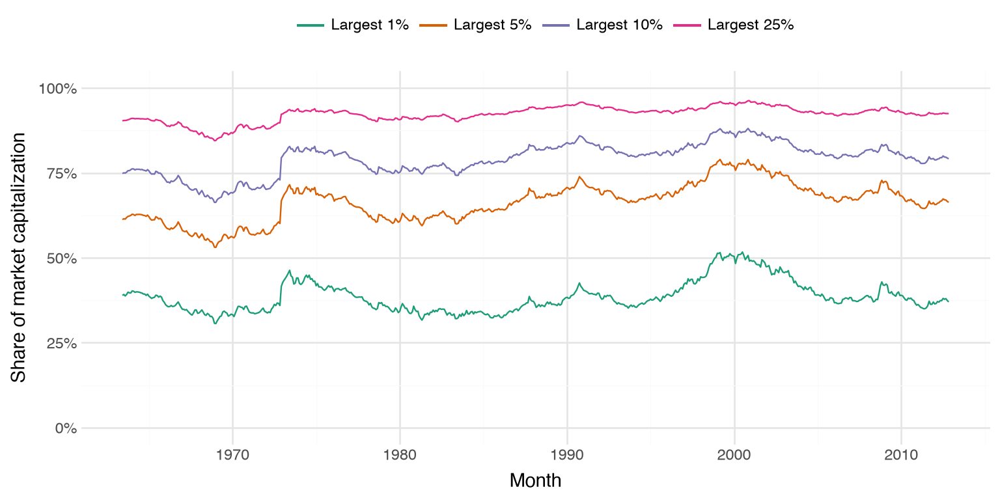

import polars as pl
from era_pl import load_parquet
first = pl.date(1963, 6, 1)
last = pl.date(2012, 11, 1)
prices = (
load_parquet("msf", "crsp")
.filter(pl.col("date").is_between(pl.date(1962, 12, 1), pl.date(2012, 12, 31)))
.with_columns(
month=pl.col("date").dt.month_start(),
cap=pl.when((pl.col("altprc") != 0) & (pl.col("shrout") > 0))
.then((pl.col("altprc") * pl.col("shrout")).abs() / 1000),
)
.select("permno", "month", "cap")
)
names = (
load_parquet("msenames", "crsp")
.select("permno", "namedt", "nameendt", "shrcd", "exchcd")
.sort("namedt")
)
stock_months = (
prices
.with_columns(month_end=pl.col("month").dt.month_end())
.sort("month_end")
.join_asof(
names, left_on="month_end", right_on="namedt",
by="permno", check_sortedness=False,
)
.with_columns(
common=(pl.col("month_end").is_between("namedt", "nameendt")
& pl.col("shrcd").is_in([10, 11])).fill_null(False),
exchcd=pl.when(pl.col("month_end").is_between("namedt", "nameendt"))
.then(pl.col("exchcd")),
)
.select("permno", "month", "common", "exchcd", "cap")
)9 The Size Effect
We follow Chapter 9 of Bali, Engle, and Murray (2016), Empirical Asset Pricing. We compare monthly and June-based size, then examine how each relates to subsequent stock returns. Formation months run from June 1963 through November 2012.
9.1 Calculating Market Capitalization
The book was published in 2016, well before CRSP’s CIZ format. This replication uses the legacy (SIZ) monthly stock and names files, not the CIZ files used in the earlier chapters. Our legacy snapshot is newer than the authors’ original data, even though we use the same sample dates. See Section 1.1.1 for the embedded update dates.
Use the share code in force at the end of each month. Keep share codes 10 and 11, without adding an exchange screen. The book’s measure uses the absolute alternate price and shares outstanding. CRSP records shares in thousands; dividing their product by 1,000 gives market capitalization in millions of dollars. Treat zeros as missing.
For the annual measure, join each stock to its capitalization at the most recent June. A stock without a record for that particular June has no annual value. We do not carry forward an older June observation.
june_caps = (
prices
.filter(pl.col("month").dt.month() == 6)
.select("permno", june="month", cap_june="cap")
)
june_year = pl.col("month").dt.year() - (pl.col("month").dt.month() < 6)
stock_months = (
stock_months
.with_columns(june=pl.date(june_year, 6, 1))
.join(june_caps, on=["permno", "june"], how="left", validate="m:1")
.drop("june")
)
Convert nominal market capitalization to December 2012 dollars using the BLS CPI-U, not seasonally adjusted. Use the CPI for the current observation month for both the monthly and the June-based measures, as in the book.
cpi = pl.read_csv("data/cpi-aucns.csv", try_parse_dates=True).rename(
{"observation_date": "month", "CPIAUCNS": "cpi"}
)
cpi_2012 = cpi.filter(pl.col("month") == pl.date(2012, 12, 1))["cpi"].item()
all_sizes = (
stock_months
.join(cpi.lazy(), on="month", how="left", validate="m:1")
.with_columns(
cap_real=pl.col("cap") * cpi_2012 / pl.col("cpi"),
cap_june_real=pl.col("cap_june") * cpi_2012 / pl.col("cpi"),
)
.drop("cpi")
.with_columns(
pl.col(var).log().alias(f"log_{var}")
for var in ["cap", "cap_real", "cap_june", "cap_june_real"]
)
.collect()
)
sizes = all_sizes.filter(
pl.col("common"), pl.col("month").is_between(first, last)
)The optional export, eap.sizes, includes the earlier December market equity needed for book-to-market and December 2012 for the annual teaching sample. It records common-stock eligibility separately so the prior December price remains available when a stock’s share code changes.
9.2 Summary Statistics
The mean of the monthly medians describes the middle stock in a typical month. It is not a median calculated once on the pooled stock-month data.
from _bem_monthly import mean_cross_sections
stats = mean_cross_sections(sizes, {
"cap": "MktCap", "cap_real": "MktCap CPI",
"log_cap": "Size", "log_cap_real": "Size CPI",
"cap_june": "MktCap FF", "cap_june_real": "MktCap FF CPI",
"log_cap_june": "Size FF", "log_cap_june_real": "Size FF CPI",
})| Measure | Mean | SD | Skew | Kurt. | Min | 5% | 25% | Median | 75% | 95% | Max | n |
|---|---|---|---|---|---|---|---|---|---|---|---|---|
| MktCap | 1101.90 | 5572.44 | 17.72 | 459.47 | 0.50 | 6.13 | 28.87 | 106.79 | 446.75 | 4112.86 | 161217.89 | 4792 |
| MktCap CPI | 1736.73 | 8838.95 | 17.72 | 459.47 | 1.55 | 13.23 | 54.54 | 188.19 | 751.12 | 6432.82 | 261951.54 | 4792 |
| Size | 4.33 | 1.92 | 0.38 | -0.08 | -1.19 | 1.46 | 2.93 | 4.16 | 5.57 | 7.75 | 11.48 | 4792 |
| Size CPI | 5.17 | 1.92 | 0.38 | -0.08 | -0.35 | 2.30 | 3.77 | 5.01 | 6.41 | 8.59 | 12.32 | 4792 |
| MktCap FF | 1100.34 | 5516.95 | 17.44 | 442.32 | 0.62 | 6.60 | 29.46 | 107.96 | 449.32 | 4133.30 | 157489.80 | 4600 |
| MktCap FF CPI | 1734.79 | 8767.27 | 17.44 | 442.32 | 1.74 | 13.84 | 55.07 | 189.36 | 754.59 | 6450.95 | 256798.87 | 4600 |
| Size FF | 4.35 | 1.90 | 0.41 | -0.08 | -0.86 | 1.54 | 2.96 | 4.18 | 5.58 | 7.75 | 11.46 | 4600 |
| Size FF CPI | 5.20 | 1.90 | 0.41 | -0.08 | -0.02 | 2.38 | 3.80 | 5.03 | 6.43 | 8.59 | 12.30 | 4600 |
The published nominal market capitalization has a monthly mean of $1,101 million and an average monthly median of $107 million. The much larger mean reflects the concentration of market capitalization in a few stocks.

9.3 Correlations
Join the size measures to the twelve-month daily beta from Chapter 8. We take the mean of the monthly cross-sectional correlations. Below the diagonal are Pearson correlations on winsorized observations, and above it are Spearman correlations on the original ranks.
from _bem_monthly import correlation_matrix, monthly_panel, period_correlations, persistence
panel = monthly_panel(sizes, first, last)
measures = {"cap": "MktCap", "log_cap": "Size", "cap_june": "MktCap FF",
"log_cap_june": "Size FF", "beta": "Beta"}
corr = period_correlations(panel, measures, "month").select(pl.exclude("month").mean())| Measure | MktCap | Size | MktCap FF | Size FF | Beta |
|---|---|---|---|---|---|
| MktCap | 1.00 | 0.98 | 0.98 | 0.33 | |
| Size | 0.58 | 0.98 | 0.98 | 0.33 | |
| MktCap FF | 0.99 | 0.57 | 1.00 | 0.34 | |
| Size FF | 0.58 | 0.98 | 0.58 | 0.34 | |
| Beta | 0.12 | 0.31 | 0.12 | 0.31 |
9.4 Persistence
For persistence, match the same stock at a fixed calendar lag, then winsorize both sides within the matched sample at the 0.5th and 99.5th percentiles.
| Lag (months) | MktCap | Size | MktCap FF | Size FF |
|---|---|---|---|---|
| 1 | 0.998 | 0.997 | 0.998 | 0.997 |
| 3 | 0.995 | 0.991 | 0.995 | 0.992 |
| 6 | 0.990 | 0.983 | 0.990 | 0.984 |
| 12 | 0.980 | 0.967 | 0.980 | 0.968 |
| 24 | 0.959 | 0.939 | 0.960 | 0.941 |
| 36 | 0.942 | 0.918 | 0.942 | 0.922 |
| 48 | 0.925 | 0.902 | 0.926 | 0.906 |
| 60 | 0.909 | 0.888 | 0.910 | 0.892 |
| 120 | 0.842 | 0.844 | 0.842 | 0.848 |
9.5 Size and Stock Returns
9.5.1 Univariate Portfolio Analysis
Sort stocks at the end of month \(t\) and measure their excess returns in \(t+1\), using the delisting rules in Section 7.2. First use NYSE stocks to calculate the breakpoints, then use all eligible stocks. In both cases, assign stocks from the full eligible sample. For the June-based sort, the value weights use June capitalization, as in BEM. Returns and CAPM alphas are in percent per month. The \(t\)-statistics use six Newey–West lags.
from _bem_monthly import bivariate_months, bivariate_panel, fama_macbeth_table, univariate_panel
def size_deciles(nyse):
return pl.concat([
univariate_panel(
panel.with_columns(total=pl.col(cap).sum().over("month")), cap, nyse,
[
pl.col(cap).mean().alias("Market cap"),
pl.col(real).mean().alias("Market cap, 2012 dollars"),
(100 * pl.col(cap).sum() / pl.col("total").first()).alias("% of market cap"),
(100 * (pl.col("exchcd") == 1).fill_null(False).mean()).alias("% NYSE"),
pl.len().alias("Stocks"), pl.col("beta").mean().alias("Beta"),
],
weight=cap,
).with_columns(pl.lit(label).alias("Sort"))
for cap, real, label in [
("cap", "cap_real", "Monthly"), ("cap_june", "cap_june_real", "June"),
]
]).select("Sort", pl.exclude("Sort"))| Sort | Statistic | 1 | 2 | 3 | 4 | 5 | 6 | 7 | 8 | 9 | 10 | 10–1 |
|---|---|---|---|---|---|---|---|---|---|---|---|---|
| Monthly | Market cap | 31.89 | 126.19 | 225.71 | 354.38 | 538.54 | 806.56 | 1225.58 | 2034.64 | 4080.66 | 20006.17 | |
| Monthly | Market cap, 2012 dollars | 57.34 | 210.84 | 365.02 | 565.03 | 854.35 | 1278.79 | 1954.06 | 3240.50 | 6291.22 | 30012.29 | |
| Monthly | % of market cap | 1.82 | 1.64 | 1.85 | 2.32 | 2.96 | 3.73 | 5.18 | 7.95 | 13.65 | 58.91 | |
| Monthly | % NYSE | 7.47 | 28.76 | 41.94 | 50.80 | 59.62 | 69.81 | 77.06 | 82.41 | 88.81 | 92.89 | |
| Monthly | Stocks | 2370.71 | 591.99 | 382.95 | 302.91 | 251.72 | 210.21 | 188.75 | 176.14 | 162.19 | 154.54 | |
| Monthly | Beta | 0.60 | 0.91 | 0.96 | 0.97 | 0.97 | 0.96 | 0.97 | 0.98 | 0.99 | 1.03 | |
| Monthly | EW Excess return | 0.90 (2.62) |
0.63 (2.20) |
0.73 (2.64) |
0.71 (2.75) |
0.71 (2.84) |
0.66 (2.75) |
0.62 (2.67) |
0.61 (2.77) |
0.51 (2.45) |
0.42 (2.19) |
-0.49 (-1.92) |
| Monthly | EW CAPM alpha | 0.40 (1.82) |
0.07 (0.48) |
0.15 (1.20) |
0.15 (1.41) |
0.17 (1.67) |
0.13 (1.43) |
0.10 (1.39) |
0.10 (1.77) |
0.04 (0.77) |
-0.03 (-0.93) |
-0.43 (-1.77) |
| Monthly | VW Excess return | 0.66 (2.03) |
0.63 (2.20) |
0.73 (2.65) |
0.71 (2.74) |
0.71 (2.85) |
0.65 (2.73) |
0.63 (2.70) |
0.62 (2.81) |
0.51 (2.44) |
0.39 (2.09) |
-0.27 (-1.12) |
| Monthly | VW CAPM alpha | 0.13 (0.69) |
0.07 (0.47) |
0.15 (1.22) |
0.15 (1.41) |
0.17 (1.67) |
0.12 (1.39) |
0.11 (1.49) |
0.11 (1.89) |
0.04 (0.75) |
-0.04 (-0.88) |
-0.17 (-0.74) |
| June | Market cap | 32.95 | 128.74 | 227.03 | 354.57 | 534.37 | 799.84 | 1213.04 | 2019.70 | 4043.35 | 19703.58 | |
| June | Market cap, 2012 dollars | 58.33 | 212.45 | 363.83 | 560.81 | 842.12 | 1260.03 | 1922.48 | 3195.98 | 6199.97 | 29502.88 | |
| June | % of market cap | 1.84 | 1.61 | 1.84 | 2.28 | 2.91 | 3.71 | 5.12 | 8.00 | 13.66 | 59.03 | |
| June | % NYSE | 7.70 | 30.08 | 43.16 | 52.46 | 61.07 | 70.72 | 78.25 | 82.51 | 89.21 | 93.17 | |
| June | Stocks | 2274.96 | 554.37 | 366.50 | 289.17 | 242.20 | 205.32 | 183.23 | 173.40 | 159.26 | 152.04 | |
| June | Beta | 0.60 | 0.93 | 0.96 | 0.98 | 0.98 | 0.96 | 0.97 | 0.99 | 0.99 | 1.04 | |
| June | EW Excess return | 0.92 (2.72) |
0.61 (2.11) |
0.70 (2.60) |
0.68 (2.58) |
0.70 (2.71) |
0.62 (2.57) |
0.65 (2.73) |
0.59 (2.62) |
0.54 (2.49) |
0.42 (2.13) |
-0.50 (-2.04) |
| June | EW CAPM alpha | 0.42 (1.96) |
0.04 (0.30) |
0.14 (1.07) |
0.12 (1.01) |
0.14 (1.44) |
0.09 (0.97) |
0.13 (1.62) |
0.08 (1.14) |
0.05 (0.88) |
-0.04 (-1.00) |
-0.46 (-1.92) |
| June | VW Excess return | 0.74 (2.31) |
0.60 (2.07) |
0.70 (2.60) |
0.68 (2.58) |
0.70 (2.72) |
0.62 (2.58) |
0.66 (2.74) |
0.60 (2.65) |
0.53 (2.46) |
0.40 (2.11) |
-0.33 (-1.41) |
| June | VW CAPM alpha | 0.22 (1.11) |
0.03 (0.22) |
0.13 (1.07) |
0.12 (1.01) |
0.15 (1.48) |
0.09 (0.99) |
0.13 (1.67) |
0.09 (1.22) |
0.05 (0.80) |
-0.03 (-0.70) |
-0.25 (-1.08) |
| Sort | Statistic | 1 | 2 | 3 | 4 | 5 | 6 | 7 | 8 | 9 | 10 | 10–1 |
|---|---|---|---|---|---|---|---|---|---|---|---|---|
| Monthly | Market cap | 6.05 | 15.73 | 29.21 | 50.27 | 83.64 | 140.67 | 244.60 | 459.00 | 1050.09 | 8933.06 | |
| Monthly | Market cap, 2012 dollars | 12.95 | 30.98 | 55.11 | 91.79 | 148.98 | 244.58 | 417.51 | 771.90 | 1760.51 | 13821.64 | |
| Monthly | % of market cap | 0.08 | 0.19 | 0.33 | 0.55 | 0.88 | 1.43 | 2.42 | 4.51 | 10.49 | 79.12 | |
| Monthly | % NYSE | 1.07 | 3.18 | 7.46 | 13.73 | 21.79 | 31.29 | 41.90 | 54.28 | 70.47 | 87.10 | |
| Monthly | Stocks | 479.70 | 479.14 | 479.08 | 479.14 | 479.25 | 478.95 | 479.03 | 479.20 | 479.04 | 479.58 | |
| Monthly | Beta | 0.42 | 0.51 | 0.61 | 0.73 | 0.83 | 0.90 | 0.94 | 0.95 | 0.94 | 0.99 | |
| Monthly | EW Excess return | 2.03 (4.78) |
0.64 (1.78) |
0.54 (1.64) |
0.56 (1.76) |
0.59 (1.96) |
0.64 (2.29) |
0.66 (2.45) |
0.67 (2.68) |
0.63 (2.74) |
0.49 (2.41) |
-1.54 (-4.86) |
| Monthly | EW CAPM alpha | 1.55 (4.94) |
0.16 (0.65) |
0.04 (0.21) |
0.03 (0.18) |
0.05 (0.28) |
0.09 (0.61) |
0.10 (0.81) |
0.12 (1.26) |
0.12 (1.52) |
0.01 (0.38) |
-1.54 (-4.91) |
| Monthly | VW Excess return | 1.49 (3.71) |
0.63 (1.76) |
0.55 (1.67) |
0.56 (1.77) |
0.58 (1.95) |
0.65 (2.32) |
0.66 (2.48) |
0.67 (2.66) |
0.63 (2.74) |
0.42 (2.21) |
-1.07 (-3.40) |
| Monthly | VW CAPM alpha | 1.01 (3.52) |
0.15 (0.61) |
0.05 (0.26) |
0.03 (0.19) |
0.04 (0.24) |
0.09 (0.65) |
0.10 (0.87) |
0.12 (1.22) |
0.11 (1.57) |
-0.02 (-1.00) |
-1.04 (-3.39) |
| June | Market cap | 6.50 | 16.41 | 29.89 | 51.01 | 84.57 | 142.27 | 246.67 | 461.72 | 1055.86 | 8901.98 | |
| June | Market cap, 2012 dollars | 13.53 | 31.77 | 55.80 | 92.54 | 149.90 | 246.17 | 419.90 | 776.19 | 1770.10 | 13780.73 | |
| June | % of market cap | 0.09 | 0.20 | 0.34 | 0.56 | 0.89 | 1.45 | 2.45 | 4.56 | 10.60 | 78.86 | |
| June | % NYSE | 1.00 | 3.09 | 7.54 | 14.40 | 23.08 | 32.84 | 43.72 | 56.18 | 71.93 | 87.73 | |
| June | Stocks | 460.50 | 460.01 | 459.88 | 460.00 | 460.09 | 459.80 | 459.88 | 460.01 | 459.89 | 460.40 | |
| June | Beta | 0.40 | 0.51 | 0.60 | 0.73 | 0.85 | 0.91 | 0.95 | 0.95 | 0.94 | 1.00 | |
| June | EW Excess return | 1.59 (4.02) |
0.86 (2.44) |
0.74 (2.22) |
0.67 (2.12) |
0.63 (2.10) |
0.65 (2.32) |
0.61 (2.26) |
0.63 (2.50) |
0.63 (2.66) |
0.51 (2.44) |
-1.08 (-3.80) |
| June | EW CAPM alpha | 1.15 (3.99) |
0.39 (1.65) |
0.25 (1.15) |
0.14 (0.75) |
0.08 (0.47) |
0.09 (0.66) |
0.05 (0.43) |
0.08 (0.78) |
0.10 (1.29) |
0.02 (0.54) |
-1.12 (-3.87) |
| June | VW Excess return | 1.35 (3.52) |
0.85 (2.42) |
0.73 (2.20) |
0.66 (2.10) |
0.63 (2.11) |
0.65 (2.31) |
0.62 (2.29) |
0.63 (2.50) |
0.63 (2.67) |
0.43 (2.23) |
-0.91 (-3.16) |
| June | VW CAPM alpha | 0.90 (3.31) |
0.38 (1.62) |
0.23 (1.11) |
0.14 (0.71) |
0.08 (0.47) |
0.09 (0.66) |
0.06 (0.49) |
0.08 (0.81) |
0.10 (1.34) |
-0.02 (-0.50) |
-0.91 (-3.17) |
With NYSE breakpoints, the equal-weighted large-minus-small spread for monthly size is −0.49% per month, as in BEM. Using all-stock breakpoints increases its magnitude to −1.54%, compared with −1.59% in the book. The difference comes primarily from the smallest decile.
9.5.2 Bivariate Portfolio Analysis
For a dependent sort, form beta quintiles first and compute size breakpoints within each beta quintile. For an independent sort, compute beta and size breakpoints separately across the reference universe. The rows are size quintiles and the columns are beta quintiles. Average portfolios give each constituent portfolio equal weight each month.
def size_quintiles(nyse, dependent):
monthly = bivariate_months(panel, "beta", "cap", nyse=nyse, dependent=dependent)
return pl.concat([
bivariate_panel(monthly, weight, independent=not dependent)
.with_columns(pl.lit(weight).alias("Weights"))
for weight in ("EW", "VW")
]).select("Weights", pl.exclude("Weights")).rename({"Target": "Size"})| Weights | Size | 1 | 2 | 3 | 4 | 5 | Control avg. |
|---|---|---|---|---|---|---|---|
| EW | 1 | 1.04 | 0.98 | 0.96 | 0.83 | 0.45 | 0.85 |
| EW | 2 | 0.74 | 0.84 | 0.86 | 0.83 | 0.61 | 0.77 |
| EW | 3 | 0.73 | 0.72 | 0.79 | 0.84 | 0.70 | 0.75 |
| EW | 4 | 0.50 | 0.66 | 0.81 | 0.63 | 0.62 | 0.64 |
| EW | 5 | 0.40 | 0.50 | 0.49 | 0.53 | 0.50 | 0.49 |
| EW | 5–1 | -0.64 (-2.84) |
-0.48 (-1.95) |
-0.46 (-1.83) |
-0.31 (-1.14) |
0.05 (0.20) |
-0.37 (-1.54) |
| EW | 5–1 CAPM alpha | -0.54 (-2.60) |
-0.31 (-1.42) |
-0.29 (-1.25) |
-0.13 (-0.52) |
0.21 (0.84) |
-0.21 (-0.99) |
| VW | 1 | 0.77 | 0.84 | 0.86 | 0.77 | 0.41 | 0.73 |
| VW | 2 | 0.75 | 0.83 | 0.85 | 0.81 | 0.63 | 0.78 |
| VW | 3 | 0.72 | 0.70 | 0.78 | 0.80 | 0.71 | 0.74 |
| VW | 4 | 0.50 | 0.65 | 0.82 | 0.64 | 0.58 | 0.64 |
| VW | 5 | 0.33 | 0.46 | 0.39 | 0.46 | 0.39 | 0.41 |
| VW | 5–1 | -0.44 (-2.33) |
-0.38 (-1.68) |
-0.46 (-2.02) |
-0.31 (-1.27) |
-0.02 (-0.08) |
-0.32 (-1.51) |
| VW | 5–1 CAPM alpha | -0.34 (-1.94) |
-0.20 (-0.96) |
-0.28 (-1.30) |
-0.11 (-0.47) |
0.18 (0.75) |
-0.15 (-0.77) |
| Weights | Size | 1 | 2 | 3 | 4 | 5 | Control avg. |
|---|---|---|---|---|---|---|---|
| EW | 1 | 2.09 | 1.48 | 1.26 | 0.98 | 0.70 | 1.30 |
| EW | 2 | 0.70 | 0.78 | 0.72 | 0.52 | 0.28 | 0.60 |
| EW | 3 | 0.60 | 0.78 | 0.84 | 0.72 | 0.47 | 0.68 |
| EW | 4 | 0.59 | 0.78 | 0.78 | 0.78 | 0.58 | 0.70 |
| EW | 5 | 0.56 | 0.55 | 0.57 | 0.58 | 0.43 | 0.54 |
| EW | 5–1 | -1.53 (-4.96) |
-0.93 (-3.00) |
-0.69 (-2.26) |
-0.40 (-1.30) |
-0.27 (-0.89) |
-0.76 (-2.69) |
| EW | 5–1 CAPM alpha | -1.41 (-4.92) |
-0.79 (-2.79) |
-0.53 (-1.90) |
-0.25 (-0.89) |
-0.18 (-0.61) |
-0.63 (-2.44) |
| VW | 1 | 1.54 | 1.06 | 0.90 | 0.62 | 0.34 | 0.89 |
| VW | 2 | 0.66 | 0.78 | 0.70 | 0.51 | 0.27 | 0.58 |
| VW | 3 | 0.61 | 0.77 | 0.83 | 0.73 | 0.48 | 0.68 |
| VW | 4 | 0.60 | 0.77 | 0.77 | 0.77 | 0.60 | 0.70 |
| VW | 5 | 0.45 | 0.40 | 0.47 | 0.43 | 0.34 | 0.42 |
| VW | 5–1 | -1.10 (-3.66) |
-0.66 (-2.10) |
-0.43 (-1.43) |
-0.19 (-0.63) |
-0.00 (-0.00) |
-0.48 (-1.67) |
| VW | 5–1 CAPM alpha | -0.96 (-3.53) |
-0.49 (-1.71) |
-0.21 (-0.80) |
0.00 (0.00) |
0.17 (0.55) |
-0.30 (-1.18) |
| Weights | Size | 1 | 2 | 3 | 4 | 5 | Control avg. | Control 5–1 | Control 5–1 CAPM alpha |
|---|---|---|---|---|---|---|---|---|---|
| EW | 1 | 1.01 | 0.98 | 0.95 | 0.82 | 0.47 | 0.85 | -0.54 (-2.22) |
-0.97 (-4.90) |
| EW | 2 | 0.68 | 0.87 | 0.89 | 0.83 | 0.60 | 0.77 | -0.07 (-0.27) |
-0.56 (-2.56) |
| EW | 3 | 0.67 | 0.67 | 0.84 | 0.85 | 0.66 | 0.74 | -0.01 (-0.03) |
-0.46 (-2.13) |
| EW | 4 | 0.51 | 0.66 | 0.82 | 0.59 | 0.59 | 0.64 | 0.08 (0.30) |
-0.37 (-1.81) |
| EW | 5 | 0.30 | 0.53 | 0.50 | 0.53 | 0.43 | 0.46 | 0.13 (0.49) |
-0.28 (-1.37) |
| EW | Average | 0.63 | 0.74 | 0.80 | 0.72 | 0.55 | -0.08 (-0.34) |
-0.53 (-2.84) |
|
| EW | 5–1 | -0.70 (-2.99) |
-0.45 (-1.73) |
-0.45 (-1.74) |
-0.30 (-1.10) |
-0.04 (-0.14) |
-0.39 (-1.59) |
||
| EW | 5–1 CAPM alpha | -0.59 (-2.72) |
-0.27 (-1.14) |
-0.27 (-1.15) |
-0.13 (-0.52) |
0.10 (0.39) |
-0.23 (-1.05) |
||
| VW | 1 | 0.75 | 0.83 | 0.82 | 0.72 | 0.33 | 0.69 | -0.42 (-1.58) |
-0.89 (-4.25) |
| VW | 2 | 0.68 | 0.86 | 0.86 | 0.84 | 0.61 | 0.77 | -0.07 (-0.25) |
-0.55 (-2.54) |
| VW | 3 | 0.65 | 0.66 | 0.84 | 0.84 | 0.65 | 0.73 | -0.00 (-0.01) |
-0.46 (-2.10) |
| VW | 4 | 0.50 | 0.64 | 0.83 | 0.62 | 0.59 | 0.64 | 0.09 (0.37) |
-0.35 (-1.75) |
| VW | 5 | 0.25 | 0.48 | 0.40 | 0.46 | 0.36 | 0.39 | 0.11 (0.44) |
-0.27 (-1.35) |
| VW | Average | 0.56 | 0.70 | 0.75 | 0.70 | 0.51 | -0.06 (-0.23) |
-0.50 (-2.75) |
|
| VW | 5–1 | -0.50 (-2.53) |
-0.35 (-1.50) |
-0.43 (-1.79) |
-0.26 (-1.01) |
0.03 (0.13) |
-0.30 (-1.36) |
||
| VW | 5–1 CAPM alpha | -0.39 (-2.10) |
-0.16 (-0.74) |
-0.24 (-1.06) |
-0.06 (-0.24) |
0.22 (0.87) |
-0.12 (-0.62) |
| Weights | Size | 1 | 2 | 3 | 4 | 5 | Control avg. | Control 5–1 | Control 5–1 CAPM alpha |
|---|---|---|---|---|---|---|---|---|---|
| EW | 1 | 1.37 | 1.40 | 1.41 | 1.26 | 1.21 | 1.33 | -0.16 (-0.52) |
-0.53 (-1.96) |
| EW | 2 | 0.60 | 0.75 | 0.72 | 0.56 | 0.20 | 0.57 | -0.40 (-1.17) |
-0.93 (-3.39) |
| EW | 3 | 0.62 | 0.73 | 0.82 | 0.61 | 0.39 | 0.63 | -0.23 (-0.73) |
-0.74 (-3.06) |
| EW | 4 | 0.67 | 0.73 | 0.76 | 0.76 | 0.47 | 0.68 | -0.19 (-0.65) |
-0.71 (-2.94) |
| EW | 5 | 0.37 | 0.53 | 0.60 | 0.63 | 0.44 | 0.51 | 0.07 (0.27) |
-0.40 (-1.79) |
| EW | Average | 0.73 | 0.83 | 0.86 | 0.76 | 0.54 | -0.18 (-0.66) |
-0.66 (-3.12) |
|
| EW | 5–1 | -1.00 (-3.54) |
-0.87 (-2.93) |
-0.80 (-2.40) |
-0.63 (-1.63) |
-0.76 (-2.03) |
-0.81 (-2.64) |
||
| EW | 5–1 CAPM alpha | -0.87 (-3.37) |
-0.72 (-2.68) |
-0.66 (-2.13) |
-0.49 (-1.37) |
-0.74 (-2.06) |
-0.70 (-2.45) |
||
| VW | 1 | 0.89 | 1.00 | 1.05 | 0.79 | 0.71 | 0.89 | -0.19 (-0.57) |
-0.60 (-2.10) |
| VW | 2 | 0.62 | 0.76 | 0.72 | 0.58 | 0.17 | 0.57 | -0.44 (-1.31) |
-0.97 (-3.57) |
| VW | 3 | 0.62 | 0.72 | 0.84 | 0.63 | 0.40 | 0.64 | -0.22 (-0.69) |
-0.73 (-3.02) |
| VW | 4 | 0.63 | 0.72 | 0.75 | 0.75 | 0.49 | 0.67 | -0.15 (-0.51) |
-0.66 (-2.72) |
| VW | 5 | 0.34 | 0.39 | 0.48 | 0.45 | 0.33 | 0.40 | -0.01 (-0.04) |
-0.41 (-1.86) |
| VW | Average | 0.62 | 0.72 | 0.77 | 0.64 | 0.42 | -0.20 (-0.75) |
-0.68 (-3.30) |
|
| VW | 5–1 | -0.55 (-2.04) |
-0.60 (-2.01) |
-0.57 (-1.62) |
-0.34 (-0.89) |
-0.38 (-0.93) |
-0.49 (-1.57) |
||
| VW | 5–1 CAPM alpha | -0.44 (-1.76) |
-0.43 (-1.58) |
-0.36 (-1.14) |
-0.14 (-0.41) |
-0.26 (-0.68) |
-0.33 (-1.16) |
9.5.3 Fama–MacBeth Regression Analysis
Regress the next month’s excess return on log market capitalization, with and without beta. Winsorize the regressors by month at the 0.5th and 99.5th percentiles. Apply six Newey–West lags to the time series of monthly coefficient estimates.
| Term | (1) | (2) | (3) | (4) |
|---|---|---|---|---|
| Size | -0.14 (-2.89) |
-0.14 (-2.41) |
||
| Size FF | -0.12 (-2.60) |
-0.12 (-2.10) |
||
| Beta | -0.08 (-0.44) |
-0.13 (-0.72) |
||
| Intercept | 1.30 (2.88) |
1.39 (3.41) |
1.21 (2.78) |
1.33 (3.32) |
| Adjusted R² | 0.01 | 0.03 | 0.01 | 0.03 |
| n | 4779 | 4424 | 4576 | 4419 |
9.6 The Size Factor
SMB is the average of three small-stock portfolios less the average of three big-stock portfolios. The three portfolios in each size group cover low, middle, and high book-to-market. Using the same book-to-market groups on both sides reduces the factor’s exposure to the value spread.
For the historical factor series we use the monthly Fama–French SMB from July 1926 through December 2012.